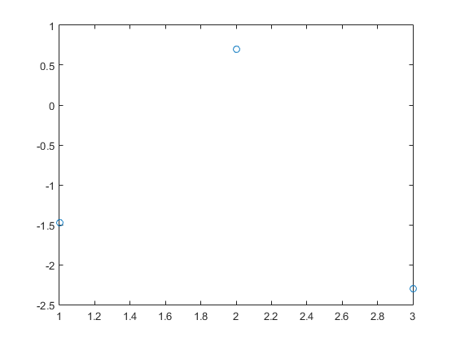

clc;clear % ========================================================================= % Linear Regression % =========================================================================
data = readtable('data.csv'); valid = readtable('valid.csv');
X = [ones(size(data,1),1) data.R data.D]; Y = data.WT [betahat, Ibeta , res, Ires, stats] = regress(Y, X, 0.05);
Y =
0.0400
0
1.0800
4.4700
3.1600
3.1900
2.9800
3.1500
2.9700
5.3100
7.4200
betahat rcoplot(res, Ires) Yestimate = X * betahat
betahat =
-14.5232
-0.0020
0.5235
Yestimate =
-1.2356
1.3809
2.7765
4.9093
2.6203
3.2617
2.6279
4.2118
2.6160
4.9304
5.6710
Xvalid = [ones(size(valid,1),1) valid.R valid.D];
Yest = Xvalid * betahat % Estimated Y value
Yest =
0.0915
2.8619
3.6191
error = Yest - valid.WT
plot(error, 'o')
error =
-1.4685
0.7319
-2.3909
clc;clear % ========================================================================= % Non-linear Regression % =========================================================================
data = readtable('data.csv'); valid = readtable('valid.csv');
R = data.R.^0.5 D = data.D.^3 Y = data.WT
R =
20.8207
16.5257
14.2056
15.3460
16.7869
16.5831
16.6703
18.0167
16.8523
14.9900
10.6536
D =
1.0e+04 *
1.9683
3.0959
3.8614
5.4872
3.8614
4.2875
3.8614
5.0653
3.8614
5.4872
5.9319
Y =
0.0400
0
1.0800
4.4700
3.1600
3.1900
2.9800
3.1500
2.9700
5.3100
7.4200
betahat(1,1) = -1.771 betahat(2,1) = -0.1033 betahat(3,1) = 0.0001531
betahat =
-1.7710
betahat =
-1.7710
-0.1033
betahat =
-1.7710
-0.1033
0.0002
Xvalid = [ones(size(valid,1),1) valid.R.^0.5 valid.D.^3];
Yest = Xvalid * betahat % Estimated Y value
Yest =
0.0853
2.8308
3.7099
error = Yest - valid.WT
plot(error, 'o')
error =
-1.4747
0.7008
-2.3001
 clc;clear % ========================================================================= % KNN Regression % ========================================================================= % %% % data = readtable('data.csv'); % valid = readtable('valid.csv'); % %% % X = data{:,2:3}; % Input Variables % Y = data(:,4); % Dependent Variables % %% Calculating the best "K" in K-NN regression % %The inputs to the Program are X and Y matrices % Nom=input('Enter number of time steps='); % f=0; % for n=1:Nom % Xtest=X(n,:); % Ytest=Y(n); % for m=1:1:Nom-1 % if m<n % B(m,:)= X(m,:); % YB(m,1)=Y(m); % else % B(m,:)=X(m+1,:); % YB(m,1)=Y(m+1); % end % end % % The calculation starts with k=2 % for k=2:Nom-1 % for W_1=0:0.1:1.0 % W(1)=W_1; % if size(X,2)==1 % W(1)=1; % f=4*(n-1)+k-1; % else % W(2)=1-W(1); % f=f+1; % end % d=zeros(n-1,1); % result=0; % finalresults=0; % for j=1:Nom-1 % d(j,1)= sqrt(sum((W.*(B(j,:)-Xtest).^2))); % end % [sortedd firstindex]=sort(d,1,'ascend'); % sumd=sum(1./sortedd(1:k)); % prob=(1./sortedd(1:k))./sumd; % result(1:k)=YB(firstindex(1:k)).*prob(1:k); % finalresults(k)=sum(result); % error(k,f)=abs((finalresults(k)-Ytest)/Ytest)*100; % Table(f,1)=k; % Table(f,2:size(X,2)+1)=W(:); % Table(f,size(X,2)+2)=error(k,f); % end % end % end % Table2=sortrows(Table); % w=0; % for k=2:Nom-1 % for W_1=0:0.1:1.0 % W(1)=W_1; % if size(X,2)==2 % W(2)=1-W(1); % w=w+1; % else % W(1)=1; % w=k-1; % end % meanerror(w+(k-2)*(11*size(X,2)-11),1)=k; % meanerror(w+(k-2)*(11*size(X,2)-11),2:size(X,2)+1)=W(1:size(X,2)); % meanerror(w+(k-2)*(11*size(X,2)-11),size(X,2)+2)=... % mean(Table2(1+(k-2)*(Nom*(11*size(X,2)-11))+... % (w-1)*Nom:(k-2)*(Nom*(11*size(X,2)-11))+(w)*Nom,size(X,2)+2)); % end % w=0; % end % leasterror= min(meanerror(:,size(X,2)+2)); % g=0; % for g=1:(Nom-2)*((11*size(X,2)-11)-(size(X,2)-2)) % if meanerror(g,size(X,2)+2)==leasterror % Final(1,size(X,2)+2)=fprintf('Least Error'); % Final(1,1)=meanerror(g,1); % Final(1,2:size(X,2)+1)=meanerror(g,2:size(X,2)+1); % Final(1,size(X,2)+2)=meanerror(g,size(X,2)+2); % Best_K = Final(1,1) % if size(X,2)==2 % Best_W=Final(1,2:size(X,2)+1) % end % LeastError=Final(1,size(X,2)+2) % end % end % %% KNN calculation%% % k=Best_K; % if size(X,2)==2 % W=Best_W; % else % W=1; % end % current=input('Enter the current state of predictors='); % Nom=input('Enter number of time steps='); % %% Calculating drh%% % d=zeros(Nom,1); % for j=1:Nom % d(j)=sqrt(sum((W.*(X(j,:)-current).^2))); % end % %% Sorting drh in an ascending order%% % [sortedd firstindex]=sort(d,1,'ascend'); % sumd=sum(1./sortedd(1:k)); % prob=(1./sortedd(1:k))./sumd; % %% Calculating Yr%% % result=zeros(k,1); % result(1:k)=Y(firstindex(1:k)).*prob(1:k); % finalresult=sum(result)